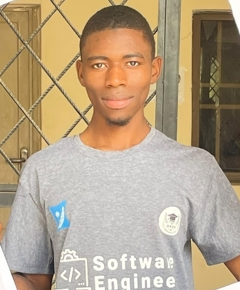

About Me
I am a dedicated Software Engineer with a strong passion for leveraging technology to create innovative solutions. I have hands-on experience working with JavaScript & Django for Web-based projects and Java Technologies for desktop applications.
My academic background in Software Engineering has equipped me with a solid foundation in programming, software development, and problem-solving skills. Known for being a quick learner and an analytical problem-solver, I thrive in dynamic environments and remain committed to continuous learning and professional growth in the ever-evolving tech industry.
I am a Software Engineer with hands-on experience in building web and desktop applications. Currently serving as an NYSC corp member, I also run a small business providing internet data cards and POS services.
Skilled in software development, basic graphic design, and proficient in Microsoft Word. I am passionate about technology and continuously expanding my skills in web development and low-effort, online-based side hustles.